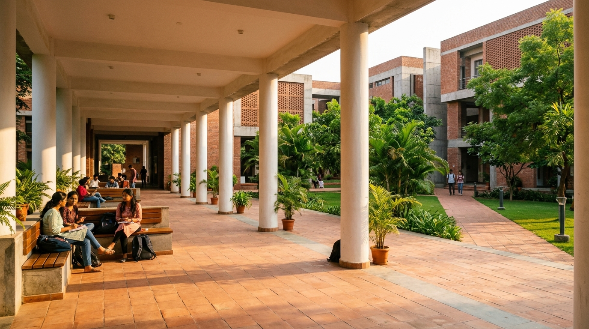
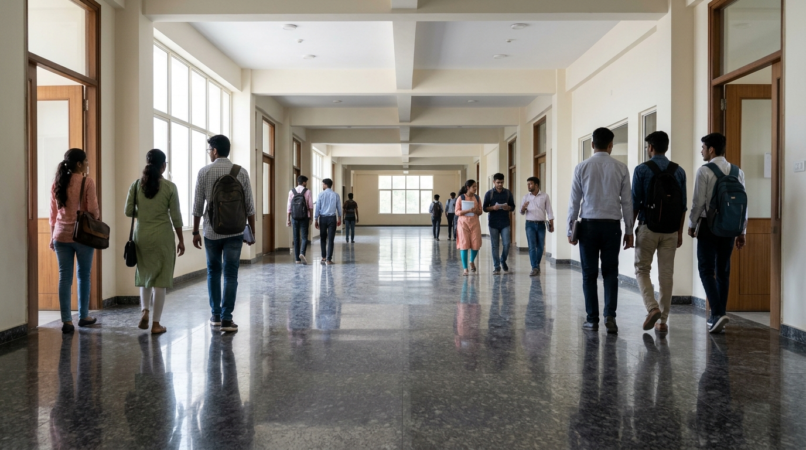
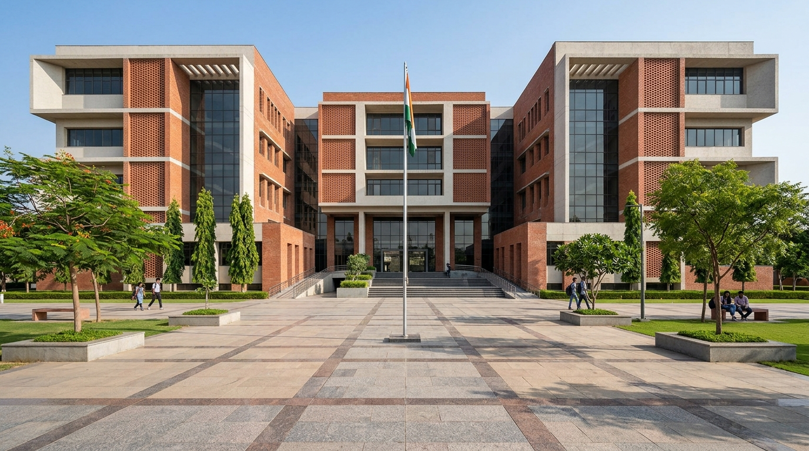

Dedicated to Academic Discipline and Scientific Excellence
Intermediate education represents the critical bridge between secondary schooling and specialized undergraduate professional degree programs. At our generic MPC Junior College, we concentrate exclusively on the MPC (Mathematics, Physics, and Chemistry) combination, directing all academic resources and pedagogical efforts toward mastering these foundational scientific disciplines.
We view Mathematics, Physics, and Chemistry not merely as exam subjects, but as interconnected intellectual languages. Mathematics cultivates abstract reasoning and structured precision; Physics explains the physical mechanisms of the universe from mechanics to electromagnetism; Chemistry illuminates molecular transformations and material behavior. Together, they prepare students for demanding technical careers.
Note: This is an illustrative academic profile representing a generic Indian junior college environment. No real or fictional brand name, management, or university affiliation is implied.

Our Academic Vision
To provide an enriching and disciplined Intermediate learning ecosystem where young minds develop a profound conceptual understanding of mathematical and scientific principles, emerging with high analytical confidence, moral responsibility, and the intellectual stamina required for premier higher education and technological careers.
Our Educational Mission
To deliver concept-driven instruction in Mathematics, Physics, and Chemistry; maintain well-equipped laboratory environments for experiential learning; instill methodical study habits and time-management discipline; and guide each student with supportive academic mentoring tailored to their individual potential.
Educational Philosophy & Teaching Methodology
Our educational philosophy centers on the belief that true learning occurs when students understand the "why" and "how" behind scientific and mathematical laws, rather than merely memorizing formulas for tests.
-
✓
First-Principles Deconstruction:
Breaking down complex multivariable formulas and scientific phenomena into fundamental axioms.
-
✓
Graded Problem Solving:
Progressing systematically from textbook fundamentals to multistep analytical challenges.
-
✓
Empirical Verification:
Reinforcing theoretical classroom derivations through hands-on physics and chemistry laboratory trials.
Fostering Academic Discipline & Culture
Intermediate education demands consistent work ethics and structured focus. Our institution emphasizes punctual attendance, diligent completion of daily assignments, systematic maintenance of laboratory observation notebooks, and an environment of mutual respect.
By eliminating unnecessary distractions and maintaining an organized daily timetable, students learn how to manage their revision schedules, handle examination pressure smoothly, and cultivate a disciplined mindset that serves them in competitive examinations and university life.


Collaborative Parent-Institution Partnership
We believe open communication between educators and families is crucial during the two Intermediate years. Parents receive periodic reports regarding student progress, attendance records, and academic assessments.
Structured academic consultation meetings provide parents with clear visibility into their child's conceptual strengths, areas needing remedial attention, and options for future higher education tracks.
DISCOVER OUR ACADEMIC OFFERINGS
Explore our structured First-Year and Second-Year Intermediate syllabus across Mathematics, Physics, and Chemistry.